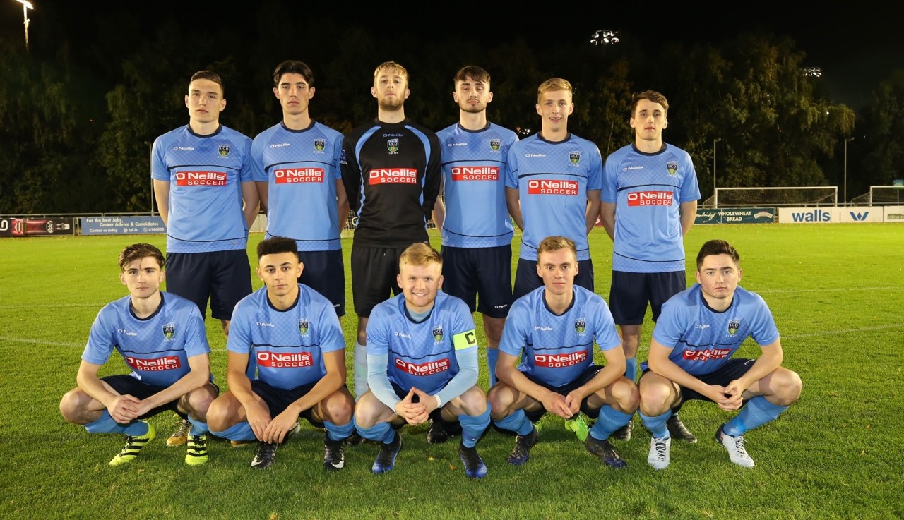

I graduated from UCD in 2016 with a Bachelor of Science degree in Physiotherapy. I have worked as a physiotherapist, strength and conditioning coach and athletics coach over the last two years. As part of my undergraduate studies I completed my thesis on "Activation and stimulation of the hip and groin musculature". I have decided to return to education and I am currently taking part in the Masters Conversion Programme in Computer Science in UCD. I hope to work in this industry when I finish the masters programme.

Coaching
One of my passions is coaching, especially athletics coaching and strength and conditioning. Over the previous two years I have worked with a variety of teams, sports and organisations. Some of these include Advanced Athlete Development, Kilmacud Crokes, UCD Athletics, UCD AFC, Ratoath GAA, Meath senior hurlers and De La Salle College senior cup team.
During the masters program I will continue to coach in my spare time. I am the sprints coach for UCD athletics club and strength and conditioning coach for the UCD U.19 and U.17 League of Ireland soccer teams. I also coach the Leinster Senior League team and I am the assistant strength and conditioning coach to the UCD first team.
In my time with UCD U.19 League of Ireland team they have won the SSE Airtricity league, the Enda McGuill Cup, and have also qualified for the UEFA Youth league. This season they have been knocked out of the cup but are in the semi-final stages of the playoffs for the SSE U19 Airtricity League.
This year I have also been involved with the UCD first team who won the SSE Airtricity First Division and will play in the Premier Division next year. They also made it to the semi-final stages of the FAI cup where they lost 1-0 to Premier Division winners Dundalk FC .